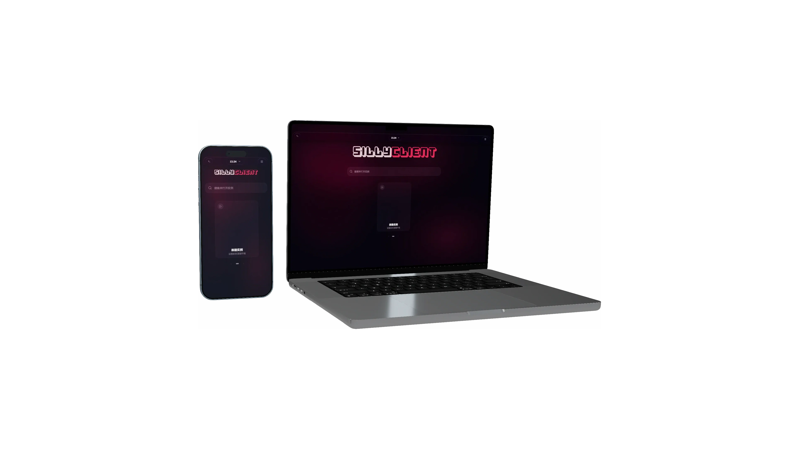
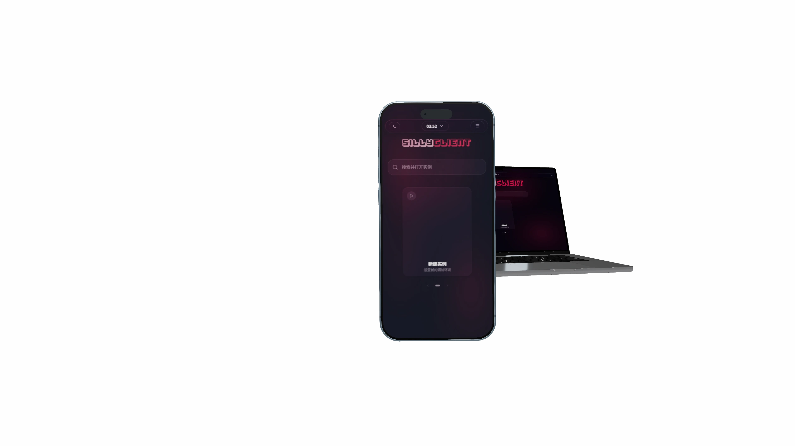
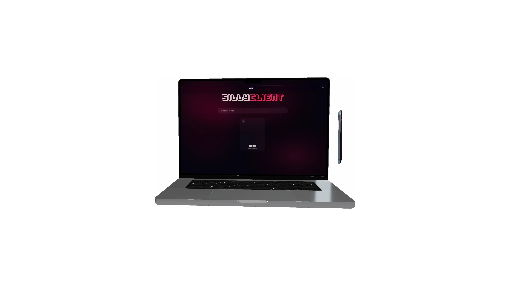

01 / 04
操作演示：从实例创建到日常管理。
通过实机操作了解实例创建、快捷操作、背景设置与远程服务连接。
正在载入视频
Windows · Android · iOS 酒馆启动与管理工具
无需配置环境，在手机与电脑上直接运行 SillyTavern。
内置 Node.js 运行环境，省去命令行与依赖配置。可在应用内直接下载酒馆版本、导入本地压缩包、管理多个独立实例，或添加地址连接已有的远程酒馆。

01 / 多端使用方式
三端共用同一套管理界面。既可在手机或电脑上独立部署运行，也可直接连接电脑与服务器上的现有酒馆。


无需安装 Termux 或配置命令行。在手机应用内即可完成版本下载、目录选择与服务启动，直接进入酒馆聊天界面。
无需保持命令行窗口常开。控制台与酒馆聊天窗口彼此独立，关闭聊天窗口不会中断后台服务，支持多版本实例并存。
若酒馆已运行在电脑、局域网或云服务器上，填入服务地址与访问密码即可直接连接使用，无需在当前设备重复安装。
02 / 演示与界面实览
showcase / 实机演示
先通过实机视频了解整体流程，再逐一查看主页列表、新建向导、卡片菜单、内置终端与壁纸设置的实际界面。